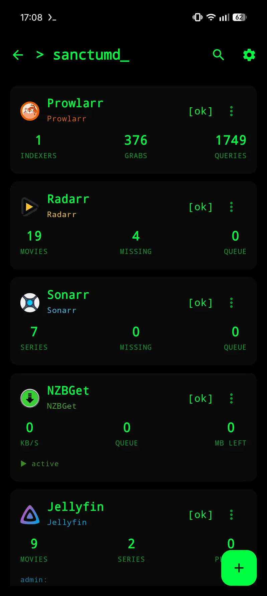
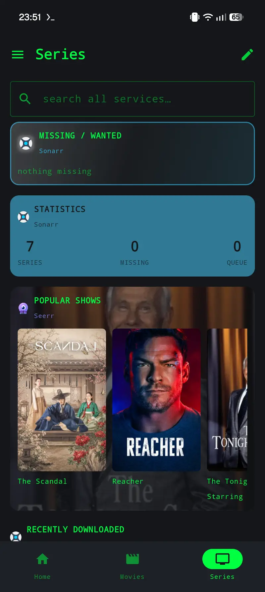
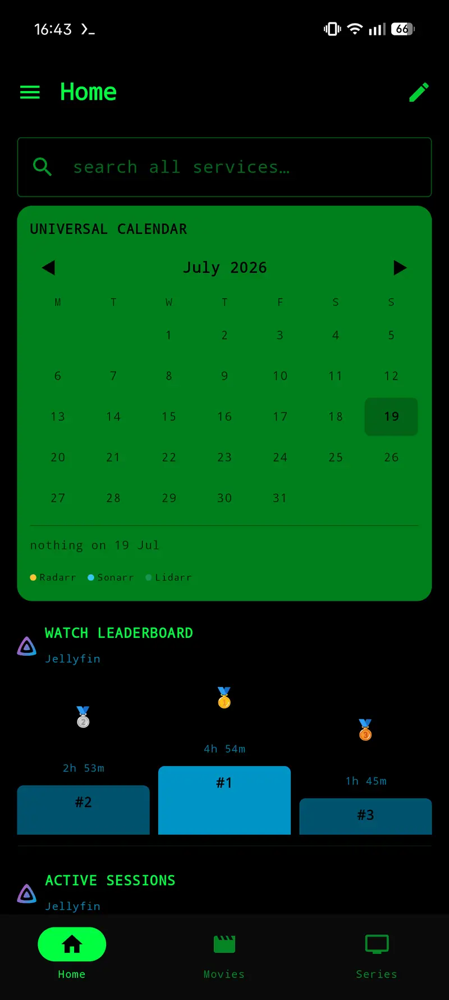
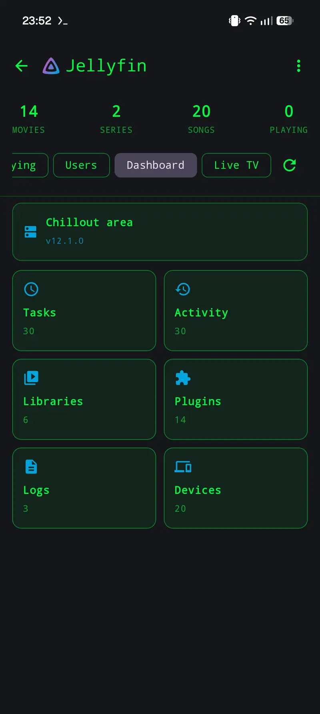
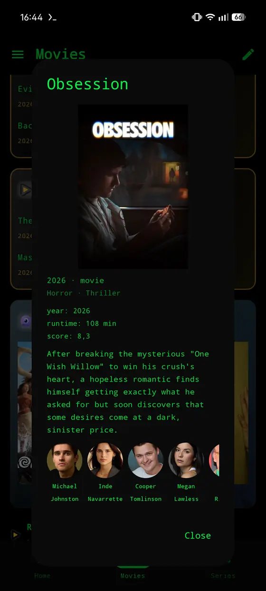
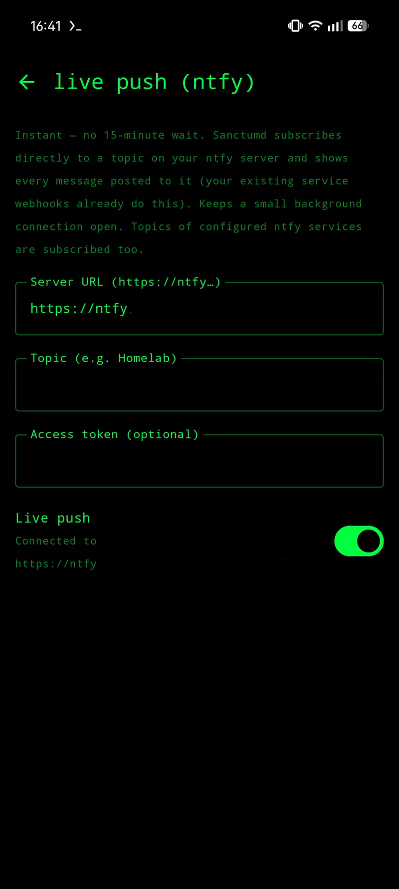
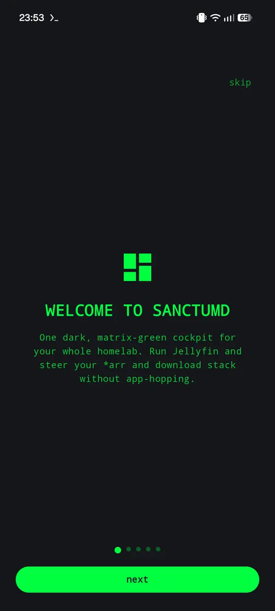

-s\/s-
,s25A||A52s,
,X2ssXh--hXss2X,
r2XrA32:;;:23ArX2r
XAs255\ .. /552sAX
XAsA2hs,:, ,:,sh2AsAX
\2XA532;: :;235AX2/
AA;2hi;, ,;ih2;AA
;5523|:: ::|3255;
AAXXA2;, ..,::,.. ,;2AXXAA
,3A53:;.,rA3hh3Ar,.;:35A3,
.5;A2,;,XX5i||i5XX,;,2A;5.
.5iX2,;.,rA3hh3Ar,.;,2Xi5.
.5r22,;. ..,::,.. .;,22r5.
.5X22,;. .;,22X5.
5;A2.; ;.2A;5
5;XA.: :.AX;5
5;AA.: :.AA;5
,3X55:: ::55X3,
22A253riiiiiiiiiiiir352A22
|\ i3ssrrrrrrrrrrrrss3i /|
|| :5rrrrrrrrrrrrrrrrrr5: ||
rr5srrrrrrrrrrrrrrrrrrs5rr
the daemon that guards your homelab
…and any HTTP endpoint, as a shortcut.







[jellyfin] dashboard · tasks · activity users · per-library access media browse · cast · now playing plugins · libraries · logs [radarr / sonarr / lidarr] library · missing · cutoff queue · history · add interactive search → grab manual import · per-ep monitoring cast · where-to-stream (via Seerr) system & health [seerr] requests · issues · discover watchlist · per-season requests approve/decline · media detail where-to-stream, per region users & stats [prowlarr] indexers · search · history tasks · send-to-arr [nzbget] queue · history · pause/resume edit · add-url · server details
[home] editable tabs + services drawer [cards] queues · missing · coming-soon recently-added · poster rows statistics · watch leaderboard sections · quick-buttons [style] accent · header icon · poster size fan-art Ken-Burns background flat / solid / glass themes [search] global, across all services [widgets] Glance home-screen: shortcuts · status · quick actions · agenda
[ntfy] add it like any other service browse a topic's messages (the server keeps ~12 h) several topics per server [live-push] direct ntfy topic subscription → instant local notifications reuses your webhook topic per-server merge · catch-up masked topic in the title tap one → the title it is about, in the app it lives in [fallback] on-device polling worker for new media / imports / requests
[shortcuts] any URL you want to hit from the phone, as a named button GET or POST · JSON body two taps to fire, never one no accidental reboots grouped under one service [where] its own screen · a dashboard card · a home-screen widget · a quick-action button
[the tv flavour] a second APK from the same source: a Jellyfin streaming client, nothing else no dashboard, no services, no widgets, removed in the manifest, not just hidden [sign-in] finds servers by broadcast Quick Connect: a code on the screen, approved on a phone username + password as fallback · https tried first [playback] libmpv, so the codec gaps of cheap sticks stop mattering matches the panel's refresh rate before playback starts direct output by default remote-friendly throughout
[crypto] credentials AES-256-GCM encrypted (Android Keystore) [lock] optional biometric app-lock [export] password-protected portable config (PBKDF2 → AES-GCM) [network] secrets kept out of cloud backup Cloudflare Access headers
Sanctumd is built and used against one homelab, by one person. The combinations below are the ones that see daily use; anything else has never been tried. Jellyfin 12.1.0 Radarr 6.4.4.10685 Sonarr 4.0.20.3014 Lidarr 3.1.6.5078 Prowlarr 2.6.5.5623 Seerr 3.3.0 NZBGet 26.3 ntfy self-hosted, version not recorded Android 17 on the phone
Sideload the APK. There is no Play Store listing. Every release is built from this source by GitHub Actions — see all releases.
One Android app for a self-hosted media stack. Jellyfin, Radarr, Sonarr, Lidarr, Prowlarr, NZBGet, Seerr and ntfy, each talked to directly over its own API. No backend of its own, no account, no sign-up.
You can, and for Jellyfin alone the official client is fine. This exists for the case where one app is not enough: you want to see the download queue, fix a stuck import, approve a request and then actually watch the film, without leaving one app for another four times.
No. It speaks the Jellyfin API. Emby is close enough that parts might respond, but nothing is tested against it and nothing is built for it.
No, and there is no plan for one. It is Kotlin and Jetpack Compose, Android only.
The tested against block above lists the exact versions it is used against
every day. Older major versions may work or may not. If yours does not, an issue with
your version numbers in it is genuinely useful.
You are about to hand an app the keys to your whole media stack. Fair questions.
On the device, in the app's private storage, encrypted with AES-256-GCM. The key lives in the Android Keystore, so it cannot be read out of a backup or off a rooted-but-locked device without the hardware. They are never sent anywhere except to the servers you configured, as the header that server expects.
There is no backend, no account, no analytics and no crash reporting. Nothing is collected and there is nowhere for it to be collected to.
One honest caveat: if you use the Seerr screens, posters, cast pictures and
watch-provider logos are loaded straight from image.tmdb.org, because that is
where Seerr points at them. So TMDB's CDN sees those image requests from your device.
Nothing else leaves your network, and no other screen is affected.
Every change goes through review before it lands, and then through CI: a test suite of 339 cases, detekt, Android Lint, and a launch test that installs the app on an emulator and drives it. The app runs on one real homelab every day before anything is tagged as a release.
What that does not cover: one person's setup is not a survey. Everything that works, works there.
In large part, yes, and the README says so under ./built-with. See the
question above for what keeps it honest. The practical consequence for you: there is no
crash reporting in here, so a bug reaches me only if you open an issue. That costs you
five minutes and is worth more than usual.
Yes, that is what the licence is for. The parts worth reading first are small:
Crypto.kt and data/ServiceStore.kt for how credentials are
stored, and net/Http.kt for what gets sent with each request. A few hundred
lines in total. Security reports go through GitHub's private advisories, not a public
issue — see SECURITY.md.
No.
| Service | What it wants | Where to find it |
|---|---|---|
| Radarr, Sonarr, Lidarr, Prowlarr | API key | Settings → General → API Key |
| Seerr | API key | Settings → General → API Key |
| NZBGet | username and password | its own settings, the control username and password |
| Jellyfin | username and password, or Quick Connect | no key needed |
| ntfy | an access token, if your server requires one | otherwise leave it empty |
Whatever you type into a browser to reach the service, including the port:
http://192.168.1.50:7878. https is tried first when you leave the scheme off.
No trailing path unless your reverse proxy puts the service under one.
Yes, the same way you reach your services from outside: a VPN back into your network, a reverse proxy, or a Cloudflare tunnel. The app only ever talks to the address you give it, so whatever works in a browser works here. There are fields for extra headers and for Cloudflare Access (service token id and secret) in the service editor.
No. The app uses Android's normal certificate validation and offers no way around it. If your certificate is trusted by the device, because you installed the CA in the system store, it works. Otherwise use a real certificate, or plain http inside your own network.
Yes, a separate APK. It installs beside the phone app rather than over it, because it has its own application id. It is a plain Jellyfin streaming client: browse, detail, play. No dashboard, no services, no widgets, on purpose. It uses libmpv, which is the whole reason it exists: the codecs ExoPlayer does not cover.
It carries armeabi-v7a as well as arm64-v8a. Plenty of TV
sticks run a 32-bit userspace on a 64-bit chip, and without those libraries libmpv cannot
load at all, which would leave you back at the codec gaps the TV build exists to close.
Android 8.0 and newer, 64-bit ARM. The phone APK carries arm64-v8a only,
because libmpv's libraries are large and bundling every architecture would multiply the
download for hardware almost nobody runs. 32-bit phones and x86 are not supported. Build
from source with the abiFilters line dropped if you need one.
Settings → "backup / data" → export. You choose a password and the file is encrypted with it. Import it on the other device with the same password. Do this before uninstalling, always.
GPL-3.0, no catch. There are donation links in the README if it saved you an evening, and nothing in the app depends on them. No paid tier, no features held back.
One person and one homelab.